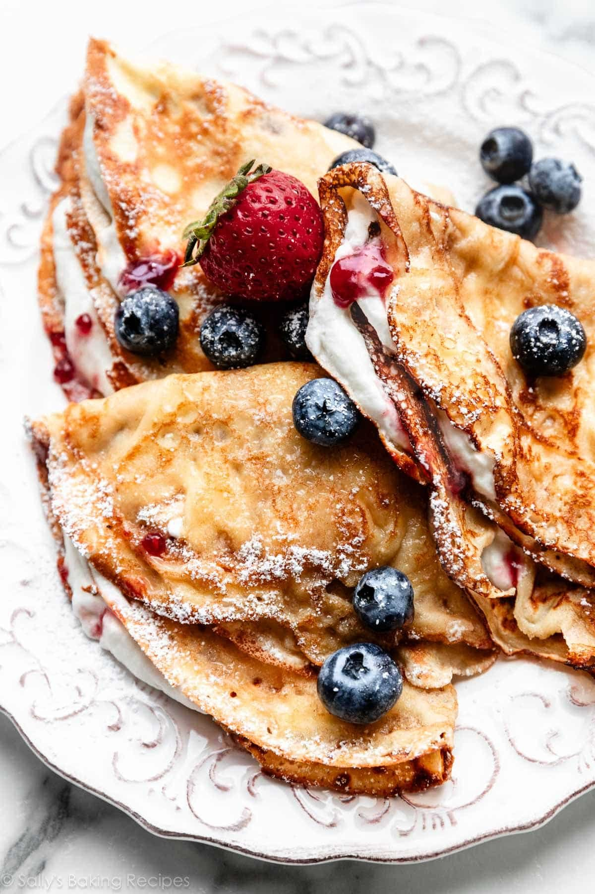

Introduction
This is a recipe that shows you how to make your own perfect French crepes. This is a family recipe that my grandmother used when her family owned a crepe store in Sweden. Whenever I visit her place, she always cooks delicious crepes in the morning, so I decided to ask for the recipe and share it with you.
Ingredients
- 1 cup (150 g) unbleached all-purpose flour
- 2 tbsp sugar
- 1 pinch salt
- 1 ½ cups (375 ml) milk
- ½ tsp (2.5 ml) vanilla extract
- 1 tbsp unsalted butter
- 2 eggs
Instructions
-
In a bowl, combine the flour, sugar and salt. Whisk in the eggs, ½ cup (125 ml) of milk, and the vanilla until smooth. Gradually, add the remaining milk, stirring constantly. Whisk in the melted butter.
-
Heat a 9-inch (23 cm) non-stick skillet over medium heat. When the skillet is hot, brush it with a little softened butter.
-
For each crepe, pour about 3 tbsp (45 ml) of batter in the centre of the skillet. Tilt the skillet to spread the batter evenly until it covers the bottom of the skillet. When the edge peels off easily and begins to brown, it's time to flip the crepe with a spatula. Continue cooking for 10 seconds, until cooked through, and remove from the skillet.
-
Place the cooked crepes on a plate as you go. Cover with aluminum foil to keep them from drying out and to keep them warm. Delicious with maple syrup, blueberry sauce, or yogurt.
